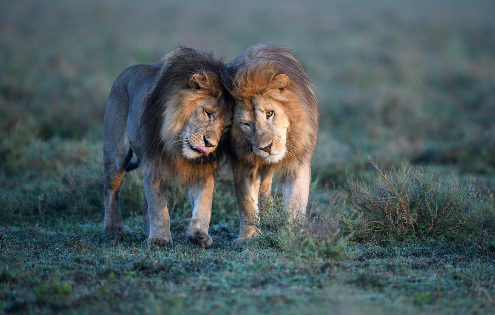
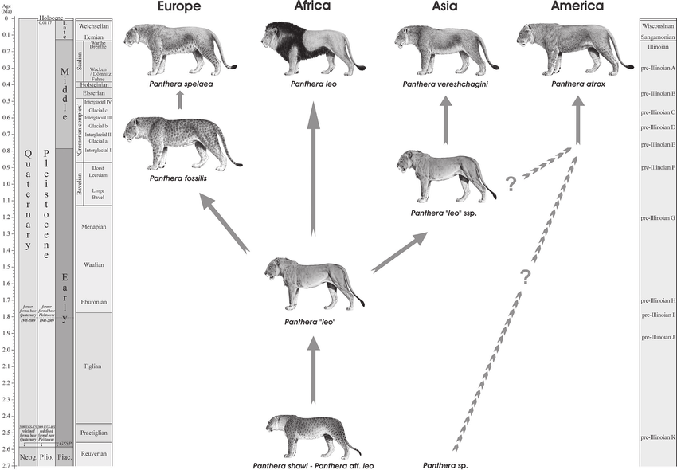

Basic info
The lion (Panthera leo) is a large cat of the genus Panthera, native to Africa and India. It has a
muscular, broad-chested body; a short, rounded head; round ears; and a dark, hairy tuft at the tip of
its tail. It is sexually dimorphic; adult male lions are larger than females and have a prominent mane.
It is a social species, forming groups called prides. A lion's pride consists of a few adult males,
related females, and cubs. Groups of female lions usually hunt together, preying mostly on medium-sized
and large ungulates. The lion is an apex and keystone predator.
The lion inhabits grasslands, savannahs, and shrublands. It is usually more diurnal than other wild
cats, but when persecuted, it adapts to being active at night and at twilight. During the Neolithic
period, the lion ranged throughout Africa and Eurasia, from Southeast Europe to India, but it has been
reduced to fragmented populations in sub-Saharan Africa and one population in western India. It has been
listed as Vulnerable on the IUCN Red List since 1996 because populations in African countries have
declined by about 43% since the early 1990s. Lion populations are untenable outside designated protected
areas. Although the cause of the decline is not fully understood, habitat loss and conflicts with humans
are the greatest causes for concern.
One of the most widely recognised animal symbols in human culture, the lion has been extensively
depicted in sculptures and paintings, on national flags, and in literature and films. Lions have been
kept in menageries since the time of the Roman Empire and have been a key species sought for exhibition
in zoological gardens across the world since the late 18th century. Cultural depictions of lions were
prominent in Ancient Egypt, and depictions have occurred in virtually all ancient and medieval cultures
in the lion's historic and current range
Evolution
The Panthera lineage is estimated to have genetically diverged from the common ancestor of the Felidae
around 9.32 to 4.47 million years ago to 11.75 to 0.97 million years ago. Results of analyses
differ in the phylogenetic relationship of the lion; it was thought to form a sister group with the
jaguar that diverged 3.46 to 1.22 million years ago, but also with the leopard that diverged 3.1 to
1.95 million years ago to 4.32 to 0.02 million years ago. Hybridisation between lion and snow
leopard ancestors possibly continued until about 2.1 million years ago. The lion-leopard clade was
distributed in the Asian and African Palearctic since at least the early Pliocene. The earliest
fossils recognisable as lions were found at Olduvai Gorge in Tanzania and are estimated to be up to 2
million years old.
Estimates for the divergence time of the modern and cave lion lineages range from 529,000 to 392,000
years ago based on mutation rate per generation time of the modern lion. There is no evidence for gene
flow between the two lineages, indicating that they did not share the same geographic area. The
Eurasian and American cave lions became extinct at the end of the last glacial period without
mitochondrial descendants on other continents. The modern lion was probably widely
distributed in Africa during the Middle Pleistocene and started to diverge in sub-Saharan Africa during
the Late Pleistocene. Lion populations in East and Southern Africa became separated from populations in
West and North Africa when the equatorial rainforest expanded 183,500 to 81,800 years ago. They
shared a common ancestor probably between 98,000 and 52,000 years ago. Due to the expansion of the
Sahara between 83,100 and 26,600 years ago, lion populations in West and North Africa became separated.
As the rainforest decreased and thus gave rise to more open habitats, lions moved from West to Central
Africa. Lions from North Africa dispersed to southern Europe and Asia between 38,800 and 8,300 years
ago.
Extinction of lions in southern Europe, North Africa and the Middle East interrupted gene flow between
lion populations in Asia and Africa. Genetic evidence revealed numerous mutations in lion samples from
East and Southern Africa, which indicates that this group has a longer evolutionary history than
genetically less diverse lion samples from Asia and West and Central Africa. A whole genome-wide
sequence of lion samples showed that samples from West Africa shared alleles with samples from Southern
Africa, and samples from Central Africa shared alleles with samples from Asia. This phenomenon indicates
that Central Africa was a melting pot of lion populations after they had become isolated, possibly
migrating through corridors in the Nile Basin during the early Holocene.